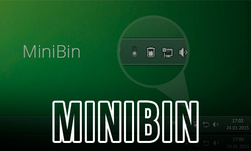
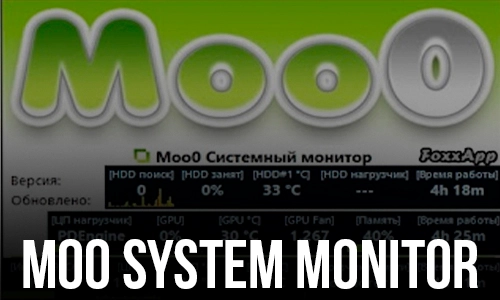
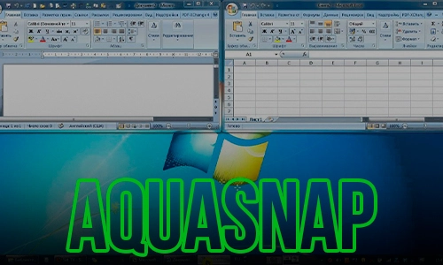
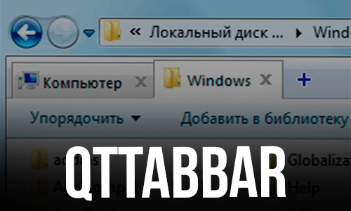

05.06.2022
Скачать!MiniBin - небольшая утилита, которая дополнит Вашу панель уведомлений иконкой Корзины.Это расширение особенно актуально для пользователей операционок Windows 8.1 и 10,где полноценный доступ к Корзине можно получить только с рабочего стола,что не всегда удобно.

05.06.2022
Скачать!Moo0 SystemMonitor - программа для мониторинга использования системных ресурсов ПК. Отображает различную информацию прямо на рабочем столе в виде панели. Вы сможете убрать ненужную информацию и добавить то, что вам интересует в данный момент.

05.06.2022
Скачать!AquaSnap - удобная утилита, которая позволяет более эффективно управлять окнами на рабочем столе монитора, предоставляющая в распоряжение пользователя такие функции, как Aero Snap, Aero Shake, Aero Stretch и Aqua Glass.

05.06.2022
Скачать!QTTabBar - это удобное расширение Проводника Windows, значительно упрощающее работу, т.к. дает возможность открывать вкладки внутри одного диалогового окна Проводника.